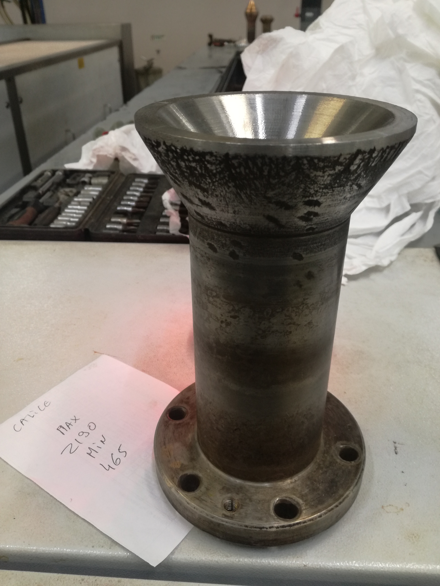
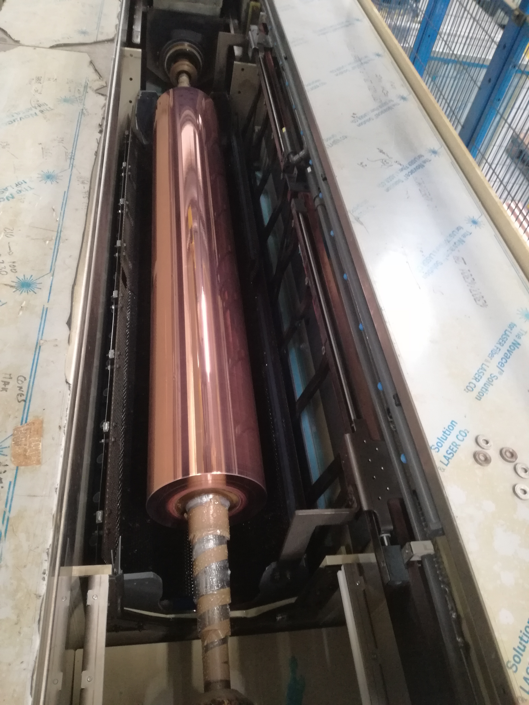

Trocar Cones normais para espigas




1º - abrir a máquina completamente e abrir as caixas de proteção.
2º - desapertar os parafusos de suporte dos cones e efetuar a troca
3º - alterar o valor atual do SUPORTE (2125 de cones normais) para (2190 de cones para espigas)
4 º - após estas alterações já é possivel cobrear espigas na linha automatica, sendo que é necessário extremo cuidado neste processo e os cilindros devem entrar diretamente na máquina de cobrear após o polimento sem desengordurar automaticamente.